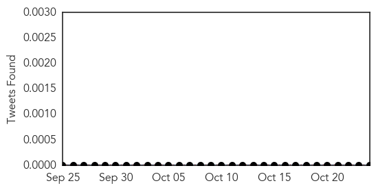
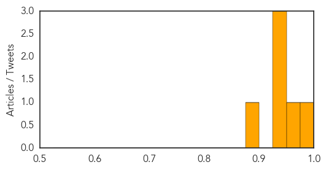

West Nile Virus
30-Day Web Trend
0 alerts, 0 warnings

30-Day Twitter Trend
2 alerts, 0 warnings

Article Locations

Article Confidences
Top Articles:
- 0.999
- Fourth West Nile case confirmed in Volusia
- 0.973
- Mosquitoes test positive for West Nile in Sugar Land
- 0.949
- Research into Bird Group Size and Susceptibility to Catching West Nile Virus
- 0.946
- Birds roosting in large groups less likely to contract West Nile virus
- 0.930
- The Mysterious Polio-Like Disease Affecting American Kids
- 0.875
- La Mesa Man Dies From West Nile Virus
Top Tweets:
-
No tweets found for Oct 24, 2014
Swine Flu
30-Day Web Trend
1 alerts, 0 warnings

30-Day Twitter Trend
5 alerts, 0 warnings

Article Locations

Article Confidences

Top Articles:
Top Tweets:
-
No tweets found for Oct 24, 2014